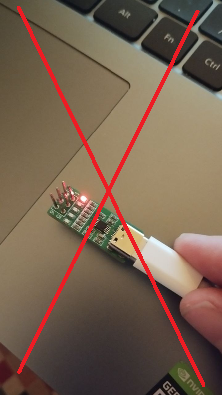
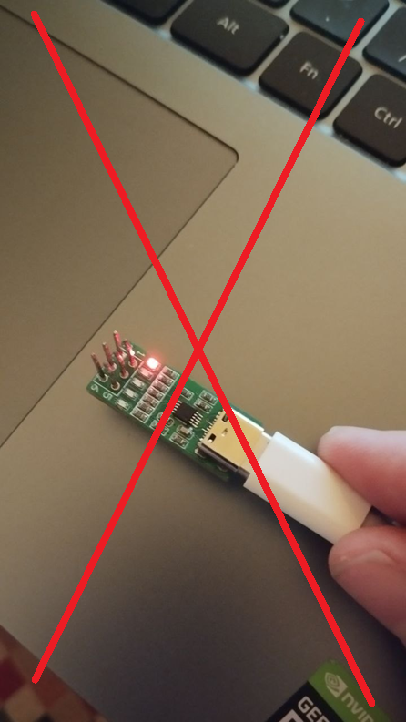

IV-Indicators for Golf/Jetta II
PHOL-LABS Kft
2025
PROHIBITIONS AND PRECATIONS!!!
SAME YET DIFFERENT WORDS: IT IS NOT ALLOWED TO INSERT PROGRAMMER TO INDICATOR AFTER IT IS ALREADY POWERED
SAME YET DIFFERENT WORDS: DO NOT ATTACH OR DETACH PROGRAMMER WHILE ITS ALREADY POWERED
Programmer is not a separate device, it’s a part of indicator
Please power only when all mechanical attachments are done already! Do not move device while programming.
No warranty or returns if device was used like described above!
(But we can send a (paid) replacement…)
IV-Indicators innovative gauge offers a multitude of functions, ensuring you stay informed about crucial vehicle metrics while adding a touch of modern sophistication to your interior, and preserving retro-tech look. The killer feature of this device is that it can be configured using Android phone to fit your own sensors.
Device is shipped in 4 options:
Upgrade your Golf or Jetta 2 with this versatile IV-Indicators Button Gauge, a must-have accessory for car enthusiast. This innovative gauge offers a multitude of functions, ensuring you stay informed about crucial vehicle metrics while adding a touch of modern sophistication to your interior, and preserving retro-tech look.
Package includes:
Equipped with default options to function as a voltmeter, oil pressure sensor, or temperature sensor, this gauge adapts to your specific monitoring needs with ease. Whether you’re keeping an eye on your vehicle’s electrical system, oil pressure, or engine temperature, this gauge has you covered.
What sets this gauge apart is its junction of retro and new technologies. Included with the gauge is a programmer that allows for easy configuration via your Android phone or computer using USB cable. With the ability to adjust the color of segments and backlighting, you can customize the gauge to match your vehicle’s interior or personal style effortlessly.
Not only does this gauge offer versatility and customization, but it also boasts calibration capabilities, allowing you to sync it with other sensors for precise and accurate readings. Say goodbye to guesswork and hello to confidence on the road.
Upgrade your driving experience with the Golf/Jetta 2 IV-Indicators Button Gauge and enjoy unparalleled functionality, style, and convenience.
IV-Indicators Barometer is intended to be working with VAG pressure sensor p.No 03C906051A
Barometer characteristics:
IV-Indicators Thermometer is intended to be working with temperature sensor Ossca 01176 or compatible for Golf 2.
Temperature NTC characteristics are listed in Appendix 1.
IV-Indicators Boost is intended to be working with Dacia 223657266R boost pressure sensor(also known as 161B0004/8200225971)
Boost sensor characteristics:
Barometer sensor uses VAG socket 8K0973703
Socket for boost sensor is currently unknown, it is recommended to use generic connectors. Proposed connector is: 1928403966 (“Bosch 3 pin connector”)
For IV-Indicators Lambda the connection is somewhat more complicated.
It is important that connection to stock Golf 2 lambda sensor is not possible
Lambda sensor measurement should be done with 2 lambda sensors installed in the car.
There are two types of Lambda sensors:
Narrowband Oxygen Sensor:
Wideband Oxygen Sensor:
The problem is that narrowband sensors are not applicable for most of custom engines and carburetors, only wideband ones. And they are more advanced, require more control operations. The indicator itself cannot control wideband sensor, and works directly only with narrowband sensors(needs to be calibrated though)
However, installation of wideband sensor is possible and recommended. For wideband sensor we do recommend Bosch LSU 4.9 sensor, which should be accompanied with supported wideband controller:
After buying such wideband controller please connect it according to its diagram to LSU 4.9 and use analog output (typically, 0-5V, 0.5-4.5 or even 0-1V output) for connection to the IV-Indicator Lambda. Below, on connection diagrams, you can find an example connection.
Also, we can assist to you on connection of IV-Indicators once for free, and in prolonged period on a paid basis consultation (e.g. if needed to change the colors and adapt other sensors)
Currently Android app is experimental and not recommended for usage. Refer to IV-Conf web pack for settings.
IV-Indicators are shipped with external programmer, which is connected as follows:
Use Type-C USB cable to connect it to your Android phone via USB-OTG. If your phone is not equipped with Type-C socket, you can use USB Hub and USB-A-USB-Type C cable.
App is in beta testing stage and is provided directly with shipped indicators.
Instructions:
Connect USB flasher to your phone and open App. Confirm and grant USB permissions to the app.
Press USB connect and wait until Connected text
On top of the app press 3 bars icon and go to Settings. Select some preset from the settings and press “Set parameters”, wait until transmission. You can also modify the settings according to your needs.
To set Dot mode, set checkbox, if use bar, leave it unpressed.
To set backlight and intensity, use the widget on the bottom of the page
To set gradient colors, select style to Gradient (default one), to select 4 color segments, select 4 segments and choose appropriate segments colors and position.
Please take in account that the app is in beta stage and will be constantly improved.
In most cases, you will only need the IV-Conf web pack section to configure the indicators. The last section, IV-Conf web pack reflashing, is used for firmware updates.
Locate to https://phol-labs.com/iv
Here, pressand select the appropriate serial port.
Now go to settings and select 115200 baud rate, if any other is selected:
Now press and then wait for connection
This section contains pre-installed presets that can be modified or reset to the original preset if needed.
Please note that the preset must match the type of physical indicator: Volts for a voltmeter, Baro for a barometer, Thermo for a thermometer.
Multiple presets may be available for a single indicator. For example, the presets IV-Volts-Bar-Multi, IV-Volts-Bar-Multi4, IV-Volts-BarYellow, IV-Volts-Bar, and IV-Volts are suitable for voltmeter indicators.
Preset Name | Description | |
IV-Volts-Bar-Multi | Voltmeter indicator with a multi-bar display | |
IV-Volts-Bar-Multi4 | Voltmeter with a 4-level multi-bar display | |
IV-Volts-BarYellow | Voltmeter with a yellow-colored bar display | |
IV-Volts-Bar | Standard bar display for voltmeter | |
IV-Volts | Basic voltmeter preset without additional graphical elements |
The color schemes of presets for other types of indicators (Barometer, Thermometer) correspond to the description in the table above.
In addition to the pre-installed presets, you can manually adjust colors, input value ranges, and other settings.
Useafter modifying settings or presets to upload them to the device. The data will be uploaded automatically within 10-15 seconds, once the icon changes from Stop Send Data to Send Data.
is used to download a preset from the device.
Typical setup cases:
All setup cases assume you have already selected the proper Serial port and have already connected (Using Connect MODBUS) button. No red error signs should be while the connection
I need to modify the colors | “Get data” from indicator Change Hue setting Hue start matches first segment, end - last segment. Bl means backlight. After that press “Send data” and wait |
The range or value of my voltmeter/barometer/lambda/boost seems incorrect | Device is factory calibrated to visually match the voltage input, but you can adjust the range upon your needs: “Get data” from voltmeter/barometer/boost/lambda sensor Play with Range min and Range max values “Send data” after that |
The range or value of my thermometer seems incorrect | First, manually check the resistance and compare it to table of resistances corresponding to NTC thermistor. Values less than 20-30 Ohms can be measured less correctly. Consider sensor replacement. See appendix n.1 for reference values. For the measurement please use ohmmeter or multi-meter. |
I want to install a custom NTC temperature sensor resistor | Write down beta coefficient and nominal resistance of the sensor. Typical values: B=4000, R=1000, but it can be also B=3800 and R=10000 or even R=33000 Press “Get data” Set the values in fields Press “Send data” |
I want Bar indication mode instead of Dot indication ode | Press “Get data” Set “Bar mode” to 1 Press “Send data” |
Locate to https://phol-labs.com/iv
Here, press and select the appropriate serial port.
Now go to settings and select 115200 baud rate, if any other is selected:
Now pressand then wait for a connection. Then press
Then clickand select the firmware supplied along with this file, and press. After that, the device is ready for use.
Resistance, Ohms | Temperature, C |
270 | 58 |
220 | 63 |
199.8 | 66 |
111 | 83 |
73.8 | 98 |
55 | 108 |
48.8 | 113 |
44 | 117 |
37.2 | 124 |
32.1 | 130 |
28.2 | 136 |
25.1 | 141 |
22.7 | 146 |
20.4 | 151 |
19 | 155 |
18.8 | 155 |
15.9 | 160 |